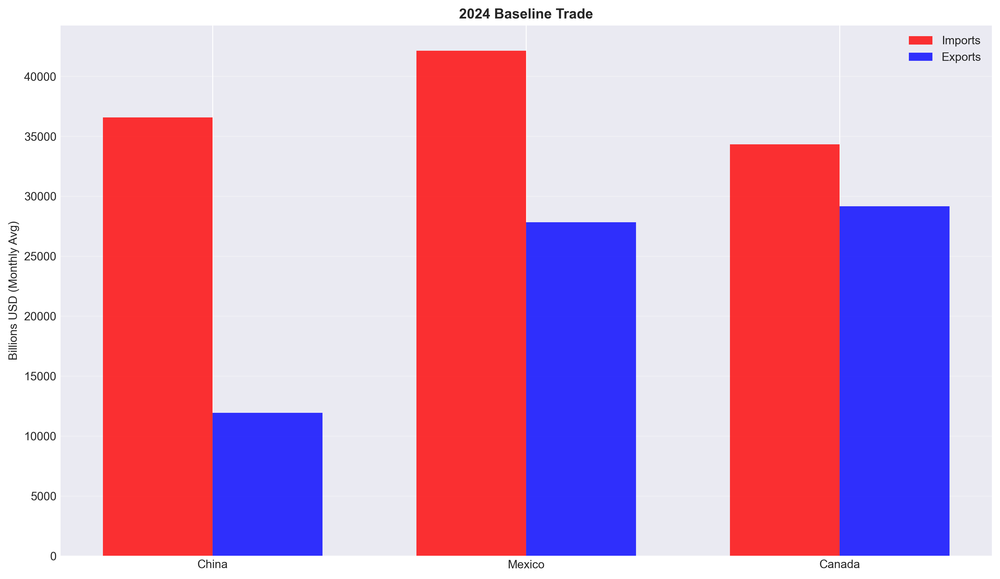
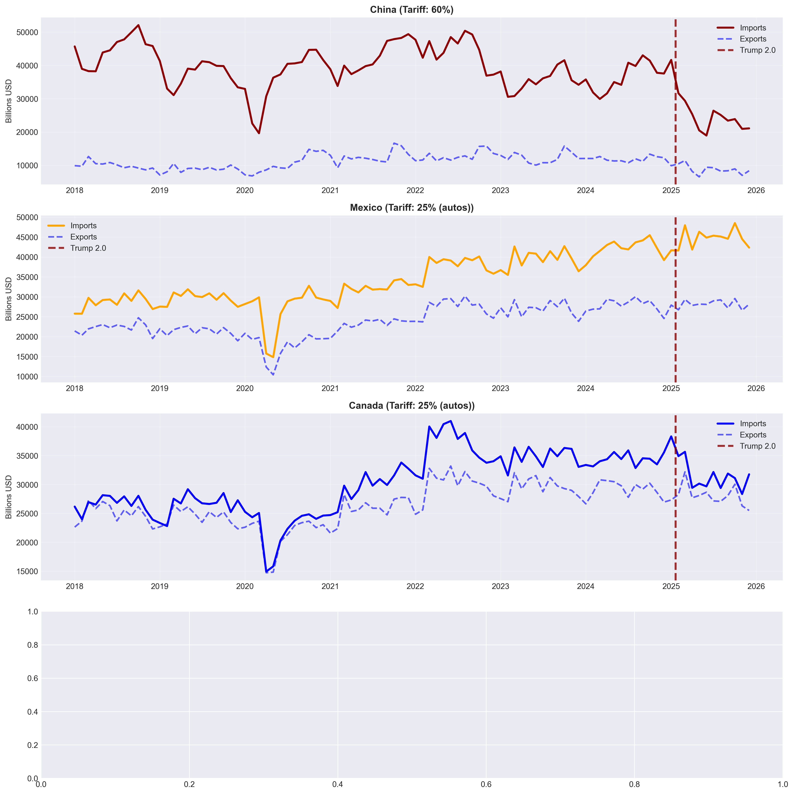
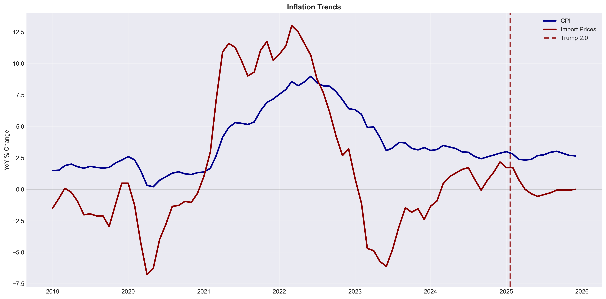

Trump's second term brought a new round of tariffs, bigger and faster than the first. This analysis looks at what actually happened to trade flows in the nine months after they took effect. Chinese imports to the U.S. fell by 34%. Mexican imports went up 6%. Consumer inflation came down, not up. The data tells a more complicated story than either supporters or critics of the policy predicted.
Trump's first term had tariffs too, mostly targeted at China starting in 2018. Everyone watching the 2024 campaign knew a second round was coming if he won. The question was how aggressive it would be. The answer came quickly: within six weeks of the January 20, 2025 inauguration, three separate tariff actions were live covering America's three largest trading partners.
The rollout happened in stages. A universal 10% baseline tariff was announced February 1. Three days later, China-specific tariffs went to 60%. On March 4, the 25% auto tariffs on Mexico and Canada went into effect. These three countries are not a random sample — in 2024, China, Mexico, and Canada collectively accounted for roughly 40% of total U.S. imports, about $1.1 trillion annually. Any meaningful disruption to those relationships shows up fast in the aggregate trade data.
Mexico is worth noting in particular. It surpassed China as America's largest single import source in 2023, driven by nearshoring trends that were already well underway before the tariffs. USMCA membership gave Mexican goods preferential access that Chinese goods did not have. That context matters a lot for understanding what happened next.
| Date | Action | Rate | Coverage |
|---|---|---|---|
| Feb 1, 2025 | Universal baseline tariff announced | 10% | All imports |
| Feb 4, 2025 | China-specific tariff implemented | 60% | All Chinese goods |
| Mar 4, 2025 | Auto tariffs on Mexico & Canada | 25% | Automotive sector |
Three countries, three tariff rates, six weeks. The speed of implementation meant markets and supply chains had very little time to anticipate and prepare before the numbers started moving.
The 2024 baseline sets the scene before the tariffs hit. Mexico was already the largest import source at $42.1 billion per month, ahead of China's $36.6 billion. Canada was third at $34.3 billion. The U.S. ran deficits with all three, but China's deficit was by far the largest at $24.6 billion monthly despite lower import volumes than Mexico. That asymmetry reflects China's export composition — a lot of manufactured goods with high markups flowing one way.
After the tariffs took effect, the responses were strikingly different across the three countries. China's exports to the U.S. fell from $36.6 billion to $24.2 billion per month, a 34% drop. That is the kind of number you expect from a 60% tariff. Importers either found cheaper alternatives or passed the cost to buyers who then bought less. Canada fell more modestly, from $34.3 billion to $31.3 billion, about 9%. Then there is Mexico, which went up, from $42.1 billion to $44.8 billion. A country facing a 25% tariff somehow increased exports to the taxing country by 6%.

| Country | Imports / Mo. | Exports / Mo. | Deficit / Mo. | Tariff Rate |
|---|---|---|---|---|
| China | $36.6B | $11.9B | $24.6B | 60% |
| Mexico | $42.1B | $27.8B | $14.3B | 25% (auto) |
| Canada | $34.3B | $29.2B | $5.2B | 25% (auto) |
| Total | $113.0B | $68.9B | $44.1B |
| Country | Pre-Tariff (2024) | Post-Tariff (Feb–Oct 2025) | Change |
|---|---|---|---|
| China | $36.6B / mo. | $24.2B / mo. | −33.7% |
| Mexico | $42.1B / mo. | $44.8B / mo. | +6.4% |
| Canada | $34.3B / mo. | $31.3B / mo. | −8.7% |
China absorbed the full force of a 60% tariff and it showed — a one-third drop in monthly exports to the U.S. in less than nine months. Mexico, hit with the same rate as Canada, went the other direction entirely. The divergence is not random noise. It is the clearest signal in the dataset.
When you put a 60% tariff on Chinese goods, importers don't just absorb the cost and move on. They look for alternatives. If that substitution is happening, you should see China losing share of total U.S. imports while other countries gain. That is exactly what the data shows.
China's share of total U.S. imports fell from 14.1% in 2024 to 9.3% in the February–October 2025 period, a drop of nearly five percentage points. Mexico captured about one of those points, rising from 16.2% to 17.2%. The remaining four percentage points went elsewhere — most likely Vietnam, India, and other Southeast Asian manufacturers who were not part of this analysis but who had been building out production capacity precisely in anticipation of this kind of tariff environment.
The historical context matters here too. During the Biden years, imports from Mexico and Canada surged 33–34% while Chinese imports stayed essentially flat. Trump 2.0 is arriving into a world where nearshoring is already underway. Mexico was positioned to absorb redirected demand because companies had already started building the supply chains to support it. The tariffs accelerated a shift that was happening anyway.

| Country | 2024 Share | Feb–Oct 2025 Share | Change |
|---|---|---|---|
| China | 14.1% | 9.3% | −4.8 pp |
| Mexico | 16.2% | 17.2% | +1.0 pp |
| Canada | 13.2% | 12.0% | −1.2 pp |
| Other | 56.5% | 61.5% | +3.0 pp (est.) |
A fall in total imports would imply trade reduction. A fall in one country's share while another rises implies trade diversion. China's 4.8 pp share decline with aggregate imports largely intact is consistent with diversion, not reduction — goods are being sourced from elsewhere, not simply not purchased.
China lost nearly five percentage points of its U.S. import share in nine months. Most of that did not come back to America. It went to Mexico, Vietnam, India, and others. The tariffs redirected trade rather than reduced it, which is a very different outcome from what most arguments for tariff policy assume.
The standard prediction for tariffs is higher prices. You tax imports, importers pass the cost forward, consumers pay more. That did not happen in the nine months of data I have. Consumer inflation fell from a 2024 average of 2.95% to 2.66% in the post-tariff period. Import price inflation went from 0.73% essentially to zero, at 0.07%.
That is a surprising result and it requires some care in interpretation. A few factors could explain it that have nothing to do with tariffs being price-neutral. The Federal Reserve was actively tightening in 2024–2025, and tighter monetary policy lowers inflation regardless of what tariffs are doing. If tariffs pushed consumers toward cheaper domestic or third-country alternatives, the measured price index might fall even as Chinese-specific prices rose. A stronger dollar — which tariffs can cause by reducing import demand — would push down the price of everything priced in foreign currencies. And critically, only eight months of data exist. Existing inventories bought before the tariffs were still being sold down, masking the tariff effect on new orders.
The honest answer is that the data does not yet tell us whether tariffs raised prices or not. The confounding factors are too numerous over a nine-month window. What the data does show is that the worst short-run price fears — a rapid inflation spike — did not materialize.

| Price Measure | 2024 Average (YoY) | Feb–Oct 2025 (YoY) | Change |
|---|---|---|---|
| Consumer Price Index (CPI) | 2.95% | 2.66% | −0.29 pp |
| Import Price Index | 0.73% | 0.07% | −0.66 pp |
1. Monetary policy: Fed tightening in 2024–25 suppressed inflation independent of tariffs.
2. Composition effects: Shifts to cheaper third-country substitutes lowered the measured price index.
3. Dollar appreciation: Reduced import demand strengthened the dollar, lowering import prices in dollar terms.
4. Inventory drawdown: Pre-tariff stock still being sold at pre-tariff prices, masking the cost pass-through.
Inflation went down, not up. Whether that is because of the tariffs, in spite of them, or just unrelated to them entirely is genuinely unclear with eight months of data. The short-run price shock that critics predicted has not arrived yet — though it may still be in the pipeline as inventories run down.
All trade data come from the Federal Reserve Economic Data (FRED) database, which aggregates U.S. Census Bureau monthly trade statistics. Bilateral import and export series for China, Mexico, and Canada are paired with total U.S. trade aggregates and price indices. Three comparison periods are defined to separate the Trump 1.0 baseline, the Biden administration, the 2024 pre-tariff baseline, and the post-tariff window.
| FRED Series | Description | Period Used |
|---|---|---|
| IMPCH / EXPCH | U.S. bilateral imports/exports with China | Jan 2018 – Oct 2025 |
| IMPMX / EXPMX | U.S. bilateral imports/exports with Mexico | Jan 2018 – Oct 2025 |
| IMPCA / EXPCA | U.S. bilateral imports/exports with Canada | Jan 2018 – Oct 2025 |
| IMPGS / EXPGS | Total U.S. goods imports and exports | Jan 2018 – Oct 2025 |
| CPIAUCSL | Consumer Price Index — All Urban Consumers | Jan 2018 – Oct 2025 |
| IR | Import Price Index | Jan 2018 – Oct 2025 |
| Period | Dates | Purpose |
|---|---|---|
| Trump 1.0 | Jan 2018 – Dec 2020 | Historical baseline for first-term tariff effects |
| Biden Administration | Jan 2021 – Dec 2024 | Context: nearshoring trends, China flat, Mexico/Canada surged |
| Trump 2.0 Pre-Tariff | Jan 2024 – Dec 2024 | Immediate baseline before new tariffs |
| Trump 2.0 Post-Tariff | Feb 2025 – Oct 2025 | Treatment period — 9 months post-implementation |
Limitations. Only eight months of post-tariff data exist, which is a short window. There is no causal identification — changes in trade flows cannot be definitively attributed to tariffs versus concurrent macroeconomic events. The analysis uses country-level aggregates, which mask sectoral variation. Exchange rates, industrial production, employment, and retaliatory tariffs from trading partners are not analyzed here but would provide fuller context.
The trade diversion framework draws on the classic Viner (1950) customs union theory distinguishing trade creation from trade diversion, extended by Irwin (2005) to unilateral tariff analysis. Fajgelbaum et al. (2020) provide the most direct empirical parallel — their assessment of the 2018–2019 tariffs finds that costs fell on U.S. consumers and firms rather than foreign exporters, a result consistent with the trade diversion pattern observed here. Amiti, Redding, and Weinstein (2019) reach similar conclusions on import price incidence. All data sourced from FRED.